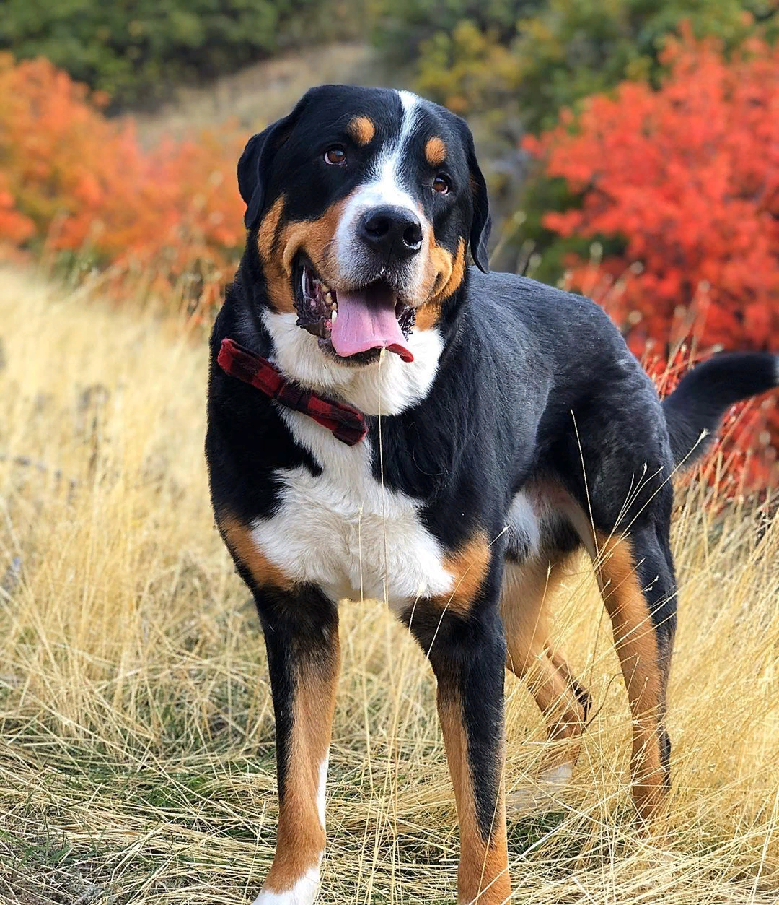
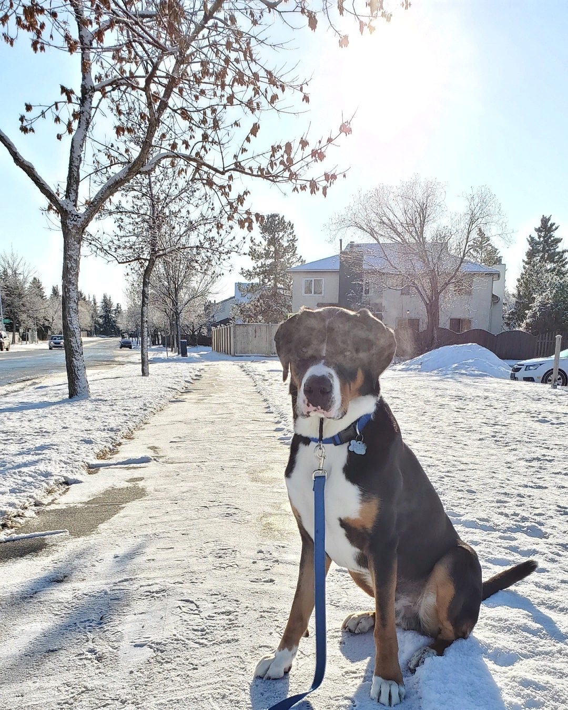
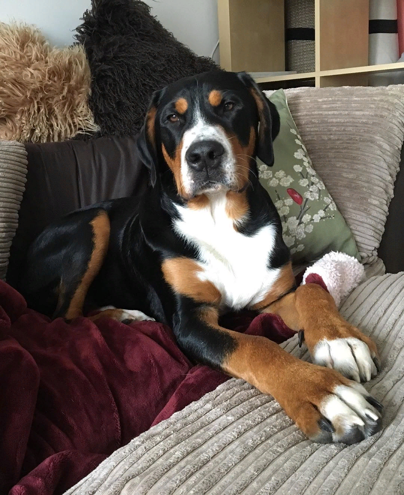
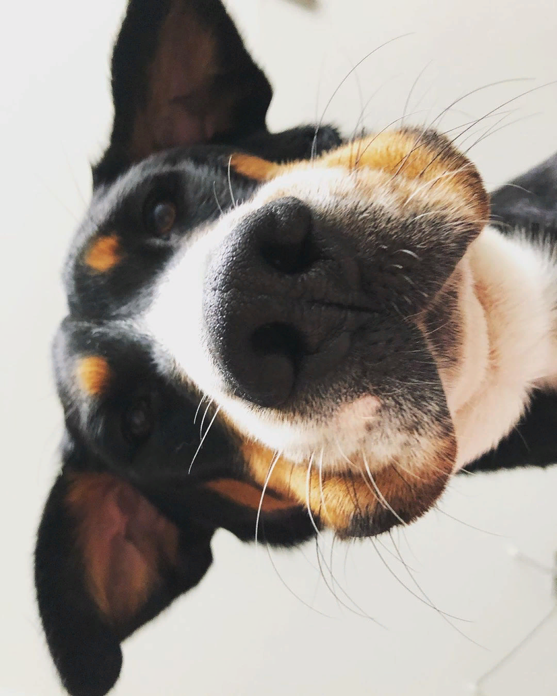
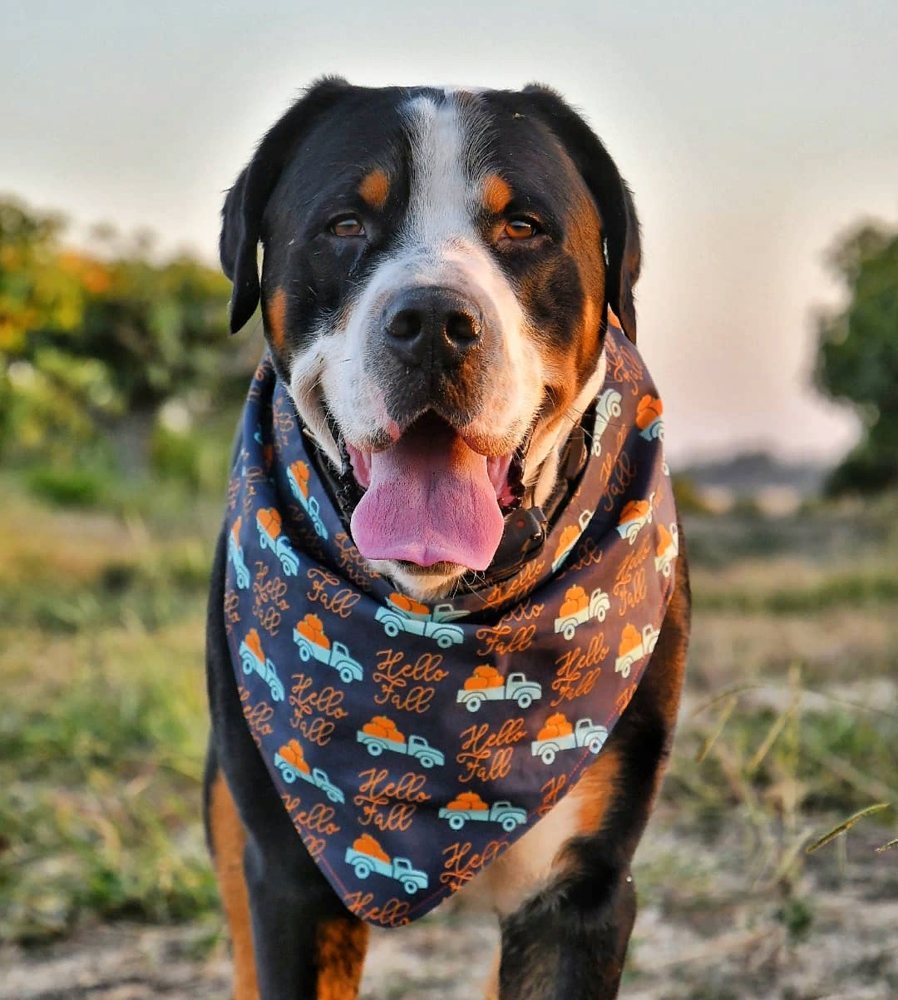
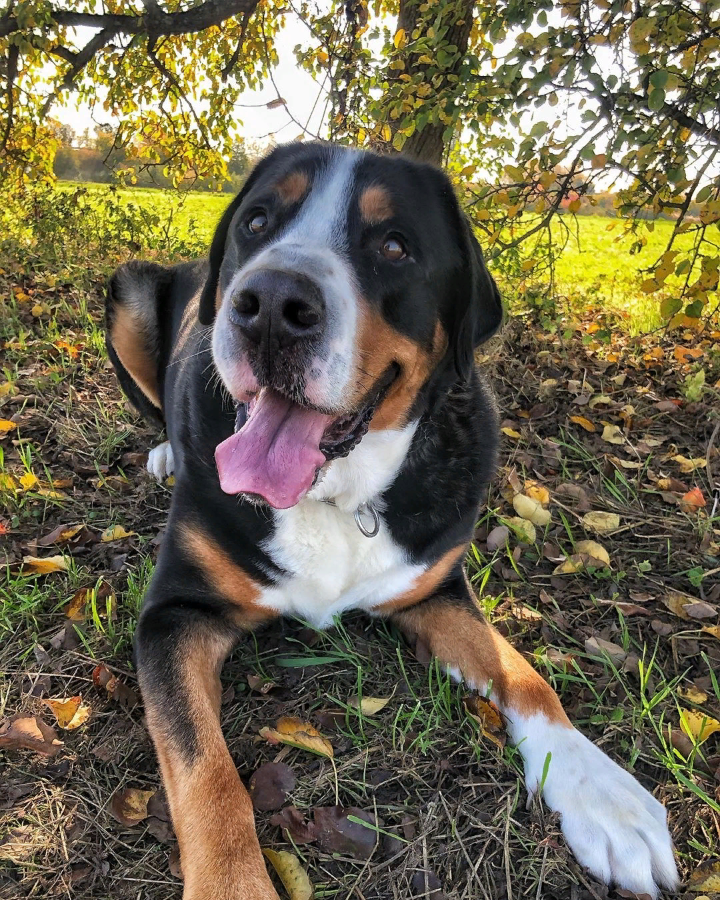

Рост самцов 65-72 см в холке, вес 54-70 кг, рост самок 60-68 см в холке, вес 45-62 кг
Средняя продолжительность жизни:
11-12 лет
Выгул:
Нужен не менее 2 раз в день
Потребность в физической нагрузке:
Средняя – нужны занятия от 1 до 3 часов в день
Стоимость щенка:
От 25000 до 65000 рублей
Фото взрослой собаки






Стоимость щенков
Пет-класс – 25000-30000 рублей.
Брид-класс – 35000-45000 рублей.
Шоу-класс – 50000-65000 рублей.
Особенности характера и поведения
У больших швейцарских зенненхундов сильны в крови инстинкты охранника и умения рабочей тягловой собаки.
Без регулярной нагрузки и общения с людьми характер собаки будет портиться,
а вот выполнение знакомой работы позволят показать все, на что она способна.
Представители этой породы очень любят воду и с удовольствием купаются в водоемах.
Благодаря неагрессивному характеру, зенненхундов часто заводят в качестве семейной собаки.
Они с удовольствием играют с детьми.
Большие швейцарские зенненхунды четко различают своих и чужих,
они не тронут других хозяйских животных,
но соседских будут прогонять со своей территории.
Также они облаивают посторонних людей, но зашедших в гости к хозяину готовы благосклонно принять.
Достоинства
Большие швейцарские зенненхунды обладают уравновешенным и миролюбивым нравом,
терпеливы, особенно при должном воспитании. Одновременно с этим они подвижны, любознательны и чистоплотны.
Эти собаки очень привязываются к хозяину и членам его семьи, с удовольствием проводят с ними время.
Они приветливо относятся к гостям, ласковы в общении с детьми, терпимы к другим животным.
У больших швейцарских зенненхундов хорошо развиты охранные качества,
при этом они обычно отзываются лаем на различные звуки,
но к агрессии прибегают редко – только решив, что грозит реальная опасность.
Недостатки
Оборотной стороной спокойствия и невозмутимости больших швейцарских зенненхундов является их упрямство.
Они могут сесть или лечь на землю и отказаться подчиняться командам.
У них дольше (до 2 лет) длится период взросления, когда собака по виду и размерам взрослая,
а поведение остается, как у щенка. От радости зенненхунд может прыгнуть на грудь человека и сбить его с ног.
Если не уделять достаточного внимания воспитанию, общению и знакомству с окружающими,
у собаки может проснуться агрессия, желание доминировать над членами семьи, либо, наоборот, боязливость.
Уход и содержание
Большого швейцарского зенненхунда не слишком удобно содержать в городской квартире из-за его габаритов и охранных инстинктов.
Ему идеально подойдет для жизни будка в просторном саду загородного дома с возможностью свободно перемещаться по нему.
Вольер или цепь такой собаке не подойдет – ей нужно ежедневно много двигаться,
заниматься и общаться с хозяином, а в одиночестве она может стать агрессивной и неуправляемой.
Любимцу обязательно нужно выделить место для сна, сухое, не продуваемое, с мягкой подстилкой, периодически очищаемое.
Зенненхунду, как и большинству собак, требуется несложный уход за глазами, ушами, зубами и когтями:
Глаза и уши следует ежедневно осматривать.
Появившиеся выделения и загрязнения в уголках глаз аккуратно вытирать ватным диском, смоченным в теплой кипяченой воде.
Отвар ромашки или некрепкий чай могут вызвать аллергию, поэтому не подойдут.
Уши протирать детским или вазелиновым маслом либо специальным очистителем, если они часто воспаляются.
Обнаружив в ушах или глазах собаки гной, нужно обратиться к ветеринару.
Для профилактики зубного камня собаке нужно давать мягкие хрящи или съедобные чистящие палочки.
Можно чистить ее зубы при помощи зубной щетки и зубной пасты для собак. Зубной камень удаляет только ветеринар.
Собачьи лапы нужно после каждой прогулки мыть или протирать влажной тряпкой, особенно между пальцев,
осматривать подушечки лап – не повреждены ли. У живущей во дворе и часто гуляющей собаки когти обычно сами стачиваются,
но периодический контроль длины не повредит.
Если когти отросли, их требуется обрезать самостоятельно или у ветеринара.
Питание
Таким крупным собакам, как большой швейцарский зенненхунд, важен полноценный рацион питания.
Несбалансированное или избыточное питание может стать причиной появления проблем с желудочно-кишечным трактом, суставами и костями.
Маленького щенка нужно кормить по 5-6 раз в день, по мере его взросления это число понемногу снижается до 1-2 раз.
Еду следует класть в чистую миску, примерно в одно и то же время, в свободном доступе должна быть питьевая вода.
В случае предпочтения сухого корма для питания любимца, нужно выбрать качественный корм, предназначенный для собак крупных пород.
Мучное, сладости, блюда со своего стола, трубчатые кости нельзя давать собаке.
В качестве добавки для обогащения еды нужно использовать костную муку и витаминно-минеральные комплексы.
Здоровье
Большой швейцарский зенненхунд – выносливая собака, обладает хорошим здоровьем
и имеет достаточно стойкий иммунитет для защиты от различных инфекций.
И все же, из-за крупных размеров, для него характерна небольшая продолжительность жизни – 11-12 лет при правильном уходе.
В результате селекции, в генах породы «записана» склонность к некоторым болезням, которые могут проявиться у отдельных представителей.
Следить за состоянием здоровья собаки поможет опытный ветеринар.
Большие швейцарские зенненхунды имеют предрасположенность к некоторым заболеваниям, передающимся по наследству, таким, как:
дистихиаз, энтропия;
катаракта и атрофия сетчатки;
остеохондроз и дисплазия суставов;
аллергия, дерматиты;
болезни желудочно-кишечного тракта, ожирение;
сердечные заболевания;
опухоли разных видов;
недержание мочи.
Выгул
Большой швейцарский зенненхунд нуждается в частом пребывании на свежем воздухе.
Даже если он постоянно живет во дворе,
ему понадобятся дополнительные регулярные долгие прогулки без поводка с подвижными играми,
занятиями спортом, ездой в упряжке.
Гулять с собакой нужно по 2 раза в день, каждая прогулка должна занимать не менее 1 часа.
Если питомец проживает в городской квартире, то длина прогулок увеличивается до 1,5-2 часов.
Летом зенненхунду необходимо укрываться от жары
– с его черной шерстью и плотным подшерстком легко получить перегрев и тепловой удар.
Уход за шерстью
Уход за короткой шерстью большого швейцарского зенненхунда заключается в
регулярном расчесывании щеткой с жесткой щетиной или фурминатором (1-2 раза в неделю).
Дважды в год у этих собак идет активная линька, и нужно вычесывать шерсть 1 раз в 1-2 дня, особенно на шее и груди.
Испачкавшуюся собаку можно искупать, но частое мытье не показано.